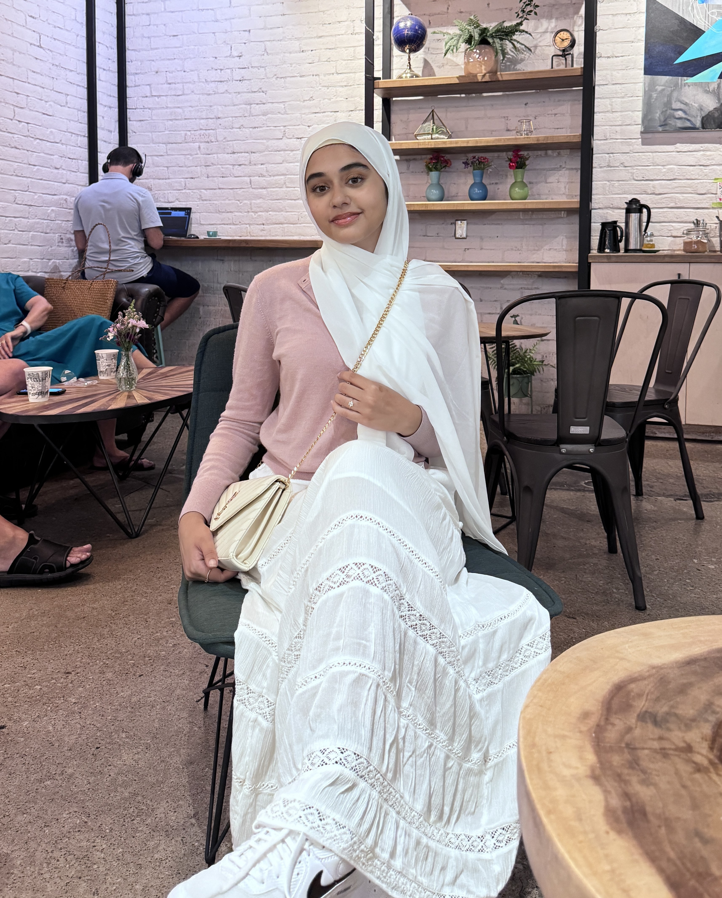
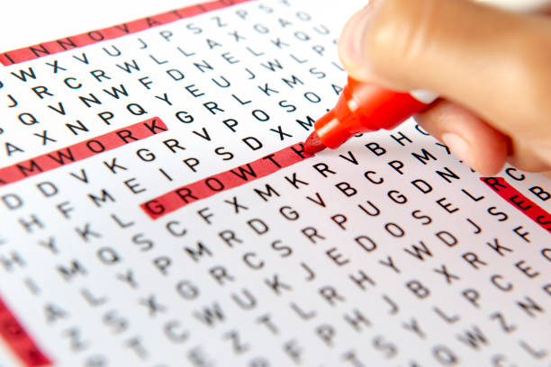

About Me:

My name is Huda Halani and I am currently pursuing a degree in computer engineering at the University of Toronto. This summer I am grateful that I was accepted as Headstarter AI Software Engineering Fellow, and plan on learning a lot and completing several projects. I am excited to explore opportunities that allow me to utilize my engineering and problem solving expertise to make a positive impact on the world around me. I love to cook, read, and run outdoors in my spare time.

Through watching Youtube videos I learnt how to make this website using html. Through this experience I learnt how to seek knowledge independantly, and that I have a passion for coding/web development. Although this is a fairly easy design I am excited to try new things and contiue to improve this website in the future.

In the ECE110 course at the University of Toronto, I participated in various hands-on labs that enhanced my practical understanding of electrical and computer engineering principles. Throughout the semester during our 'Electric Fields and Circuits' course, we were paired up and built a series of circuits.

Utilizing Fusion 360, we designed and tested a prototype that met our client's specific requirements. After working closely with our client for weeks, we presented our solution, and he was thoroughly impressed with our extensive research and attention to detail.
2024
Word Search
Puzzle in C

Using C, I created a word search program in which the user could enter the puzzle, then input a word to find and the program would return the location and direction of the typed up word.
Attached
is the code I developed.

Using C, I coded the game ‘Reversi’ which is a two-player game in which players place tiles on the board to capture the opponent’s pieces until the board is fully occupied.
As a member of a collaborative team of engineers, we worked on a project focused on addressing accessibility challenges within a UofT building.